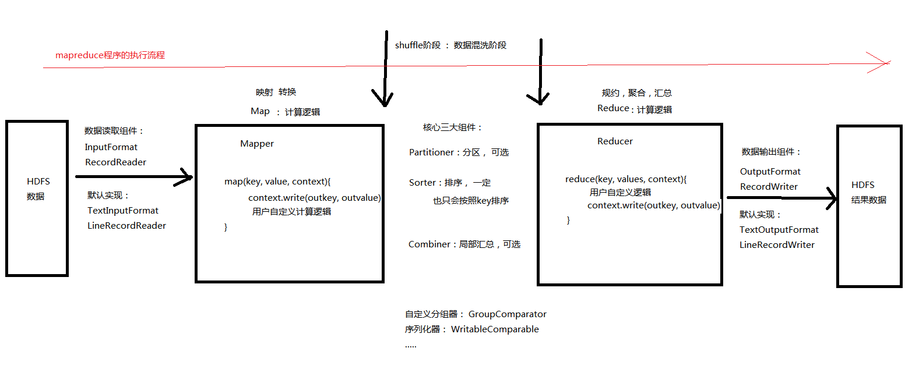
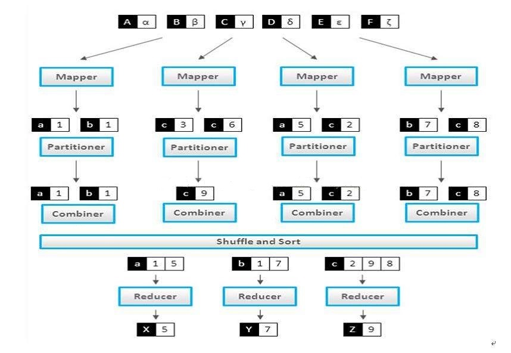
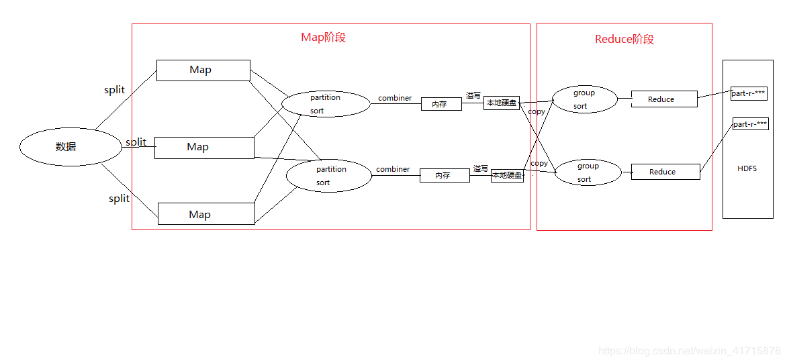
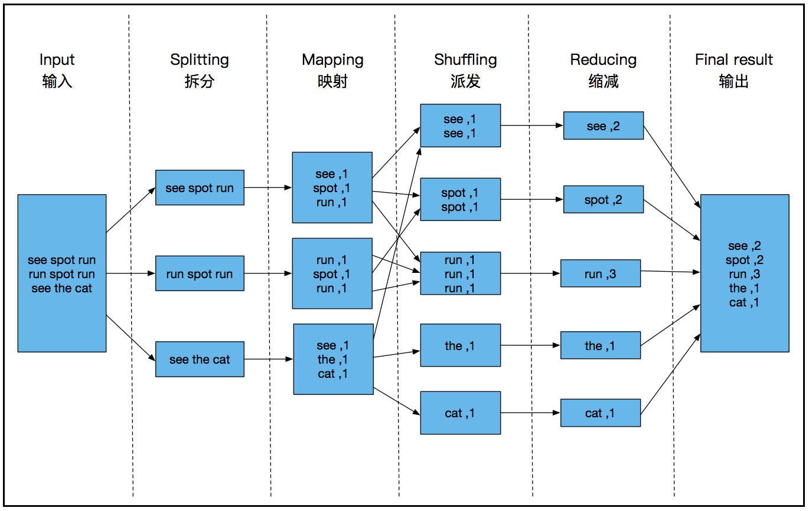

1、MapReduce核心执行流程

以下两张图是网络上找的,都稍微可能有点问题


2、WordCount逻辑

3、MapReduce程序执行小技巧

4、MapReduce程序在eclipse运行时如何填写参数：
（1）当MapReduce程序运行在本地window系统中时：

（2）当MapReduce程序运行在hdfs系统中时：

5、mapTask的并行度决定机制：
HDFS 的核心实现： 分散 + 冗余
也需要兼顾 数据的 计算
（1）启动maptask的任务数是怎样的？
如果在hdfs目录 /wc/input/中有如下两个小文件

运行MapReduce计算该文件夹：

在历史任务服务器中显示的任务数如下：

结论：一个数据块（物理切分储存在hdfs的块）就会启动一个mapTask。
(注意不是一个文件,是实际存储的块的大小,因为一个文件可能大于预设的128M的大小,这个时候会将其分为两个物理块进行存储,就会启动两个maptask)
（2）这个默认规则是由谁决定？？（maptask的工作原理）
FileInputFormat
当前一个mapreduce程序到底要启动多少个maptask 完全是由这个方法决定的：FileInputFormat.getSplits()
List<InputSplit> splits = getSplits(JobContext context)
而一个mapredue程序会产生的maptask的总数就是: splits.size()。也就是说, 一个mapTask任务就是执行一个InputSplit。
一个逻辑切片(splitsize)的大小的原理是：求 minSize maxsize blocksize 三者的中间值，然后赋给splitsize
(注意区别splitsize和上面的splits.size()是不一样的,splitsize是一个逻辑切片的大小, 而splits.size()则是mapTask的总数)
在默认情况下， 只能对一个单独的文件进行逻辑切片
这个文件的最后一个逻辑切片不管还剩多小，都是一个单独的逻辑切片
eg:
有两个文件,都是 129M ：在默认情况下,最终启动maptask的个数： 4 个
首先明确两个概念：（以下“=”两边的词汇描述的是同一个概念）
splitsize=逻辑切分的大小=逻辑块的大小=逻辑块
blocksize=物理切分的大小=物理块的大小=物理块
注意splitsize是mapreduce进行计算时的逻辑计算大小的切分，而blocksize则是实际储存在磁盘中的块的大小，也就是说splitsize多大，进行计算时多大的数据量就会启动一个maptask。所以注意，实际上，正常情况下splitsize等于blocksize，因为一个物理块对应于一个逻辑块，从而启动一个maptask，这是比较合理的操作。而如果splitsize不等于blocksize，那就会导致多了或少了的数据量还要进行切分以及合并，而如果mapTask在多个节点上运行(注意: 一个MR程序并不是只会在一个节点上只启动一个maptask), 也可能启动多个)，还可能造成一个物理块的数据在本地运行一部分, 另一部分还要往别的节点传输，这样就会增大网络带宽的压力。


（3）在默认的的逻辑切片规则中：
1）如何调整splitsize的大小？
splitsize值的大小的原理是：求 minSize maxsize blocksize 三者的中间值，然后赋给splitsize
所以有以下方法：
1、直接更改blocksize的大小(这里所谓的更改只是在计算之前更改了blocksize的大小,物理储存已经按
128M的大小进行了物理切片储存在集群里),让它不等于 当初上传上来的文件的切片大小 不推荐 会造成网络传输
2、更改minsize大小,使其 > blocksize ,这样中间值就变成了minsize
3、更改maxsize大小,使其 < blocksize,这样中间值就变成了maxsize
但其实,在真正的工作中，基本是不会调整splitsize的大小的。
如果你想让在做计算的时候的逻辑切片大小不是默认的128M， 那么上传文件的时候就应该去更改物理切片数据块的大小, 那时候就修改好的话，一个物理块还是启动一个maptask，因为逻辑切片的大小也已经变成了一个物理切片的大小。
因为作为中间值的blocksize（物理块）的大小已经变了，splitsize还是等于minSize maxsize blocksize 三者的中间值blocksize，所以splitsize的大小当然随之改变，而不是在要计算的文件储存好之后、计算之前去更改,因为会造成网络传输。
2）真正的优化问题
问题1：假如在做计算的时候，就是一堆的小文件。
假如是1000个1M的文件
按照默认的规则： 最终启动1000个mapTask
每一个maptask所处理的数据量是 1M
启动任务所花费的时间 要 超过 执行真正计算的时间，怎么优化？
1、要么在上传文件之前，进行合并
2、CombineFileInputFormat这个类的getSplits方法的实现逻辑就和默认的FileInputFormat.getSplits方法的实现逻辑不一样
CombineFileInputFormat就是用来解决计算大量小文件造成的 任务计算效率过低的问题
可以设置，说让多少个文件 看做是一个 inputSplit
一个maptask依然是执行一个inputSplit
不同的InputFormat的InputSplit的区别：
FileInputFormat ： 一个数据块只属于一个文件
CombineFileInputFormat ： 包含多个不同的文件的数据块
问题2：
如果一个集群有50个节点，要计算的数据块有 200个
理想情况下： 应该是每个节点 分布 4个数据块
同一个节点启动的maptask的个数：默认情况下： 4个
（注意了：也就是说一个job并不是一定会在一个节点上只启动一个maptask，同一个job同样可能会在同一个节点上启动多个maptask，是视情况而定的，如果数据块的数量大于节点数，当然有可能出现这种情况(在计算资源足够的情况下)。当然，如果数据块的数量少于节点数，集群还是会尽量让同一个job的每个maptask启动在不同的节点上，毕竟数据块的分布本身就是尽量均匀的）
maptask1 : 启动jvm --- 执行计算 --- 关闭jvm
maptask2 : 启动jvm --- 执行计算 --- 关闭jvm
maptask3 : 启动jvm --- 执行计算 --- 关闭jvm
maptask4 : 启动jvm --- 执行计算 --- 关闭jvm
解决思路：更改某些值，启动的一个maptask去执行多个逻辑切片的计算
解决方案：启动一个jvm进程 --- 执行计算 -- 执行计算 -- 执行计算 -- 执行计算 -- 关闭jvm
会产生新的问题：
要去衡量 jvm 重用的次数 所节省的时间 和 之前执行多个并行计算的时间
因为jvm重用maptask进程是 每个maptask进程在计算时，整个流程是串行执行，虽然更节省资源，但是如果
处理不当反而更浪费时间。而多个maptask进程是并行运行的，但计算机资源消耗更多
如果 启动JVM ： 30s，关闭JVM ： 30s，执行计算 : 60s 那么显然还是不能使用jvm重用执行四个task的
如果 启动JVM ： 30s，关闭JVM ： 30s，执行计算 : 5s 那么显然使用jvm重用执行四个task将会大大缩
短MapReduce程序的执行时间并且还会节省计算机资源，一举两得。
如果启动jvm的时间远远超过 执行计算的时间的话。 那么jvm重用将变得非常的有用
6、reduceTask的并行度决定机制
决定一个MapReduce程序到底运行多少个reduceTask
（1）如何设置reduceTask的个数及其含义：


下图就是上图第5点中的reduceTask的默认实现：

（2）自定义reducer组件时,输入参数的含义

（2）HashPartitioner类：
1）作用：

2）HashPartitioner类自带的默认执行的getPartition方法：


关于getPartition方法返回值的一些小提示：

———————————————手写与上传资料分割线—————————————————
MapReduce的核心架构思想：
1、第一个阶段： 任务的切分和并发运行
2、第二个阶段： 结果的收集和最终汇总
炒菜
天鹅肉
天鹅 + 其他的佐料
[hadoop@hadoop02 ~]$ cd apps/hadoop-2.7.4/share/hadoop/mapreduce/
[hadoop@hadoop02 mapreduce]$ ll
total 4976
-rw-r--r-- 1 hadoop hadoop 538493 Nov 28 10:31 hadoop-mapreduce-client-app-2.7.4.jar
-rw-r--r-- 1 hadoop hadoop 773728 Nov 28 10:31 hadoop-mapreduce-client-common-2.7.4.jar
-rw-r--r-- 1 hadoop hadoop 1556333 Nov 28 10:31 hadoop-mapreduce-client-core-2.7.4.jar
-rw-r--r-- 1 hadoop hadoop 189940 Nov 28 10:31 hadoop-mapreduce-client-hs-2.7.4.jar
-rw-r--r-- 1 hadoop hadoop 27824 Nov 28 10:31 hadoop-mapreduce-client-hs-plugins-2.7.4.jar
-rw-r--r-- 1 hadoop hadoop 62383 Nov 28 10:31 hadoop-mapreduce-client-jobclient-2.7.4.jar
-rw-r--r-- 1 hadoop hadoop 1552044 Nov 28 10:31 hadoop-mapreduce-client-jobclient-2.7.4-tests.jar
-rw-r--r-- 1 hadoop hadoop 71611 Nov 28 10:31 hadoop-mapreduce-client-shuffle-2.7.4.jar
-rw-r--r-- 1 hadoop hadoop 296039 Nov 28 10:31 hadoop-mapreduce-examples-2.7.4.jar
drwxr-xr-x 2 hadoop hadoop 4096 Sep 3 11:06 lib
drwxr-xr-x 2 hadoop hadoop 4096 Sep 3 11:06 lib-examples
drwxr-xr-x 2 hadoop hadoop 4096 Sep 3 11:06 sources
[hadoop@hadoop02 mapreduce]$ hadoop jar hadoop-mapreduce-examples-2.7.4.jar pi 3 3
mapreduce程序的核心：
1、mapper阶段： 任务的切分和并发运行
2、reducer阶段： 结果的收集和最终汇总
2、reduceTask的并行度决定机制
决定一个MapReduce程序到底运行多少个reduceTask
在默认情况下，reduceTask的个数可以随意设置
job.setNumReduceTasks(3);
1、如果没有手动的显示设置 reduceTask 的个数， 最终就运行一个
2、在默认情况下， 更改reduceTask的个数大于 1
结果的分布：
结果的分布是按照 HashPartitioner的规则